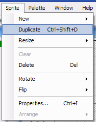
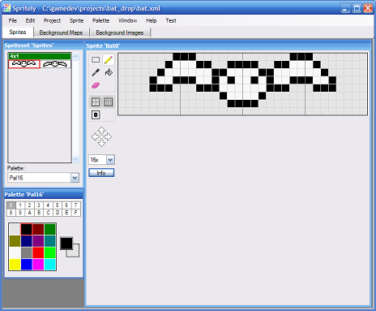
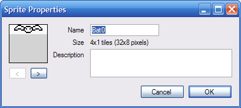
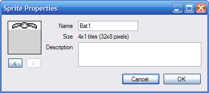
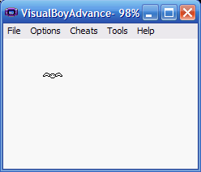

Animating the player
This tutorial will describe how to animate your player object.
This tutorial has been tested with devkitARM release 26 and Spritely version 0.19.20 beta and verified to work for both GBA and NDS projects.
Step 1 : Draw your animation frames
First, you'll need to draw the frames of your animation.
Go to Spritely and draw a few frames of animation — you need at least 2 frames, but you can add as many as you like. When creating your sprites, you may want to make use of the "Sprite::Duplicate" menu item.

Make sure that your sprites are arranged in Spritely in order. If they are not in order, then they will not animate correctly.

Step 2 : Name each animation frame
After you've created your new sprites. You now need to give each of your sprites a unique name. Since these sprites are all part of the same animation, you should probably give them names that are related.
For example, if you have 3 sprites in your animation you can name them:
Player_first Player_X Player_last
or
Player_0 Player_1 Player_2
or whatever other naming scheme you prefer. The important thing is that you give them all unique names and that you remember the name of the first and last sprite.
Because we have bats, in this example we'll be using Bat0 and Bat1.


Step 3 : Export
Export your project and open the project file so that we can edit code..
Step 4 : Add variables to keep track of animation
Now that we've created the sprites, we need to make use of them.
Open up game_state.h and find:
game_state.h — Lines 35 - 41:
private: // The current level of the game. int _level; // The (x,y) location of the object representing the player. int _xPlayer, _yPlayer; };
This code declares the variables in the GameState class that are used to keep track of what's going on in the game.
By default, GameState has only 3 variables: the current level in the game (default = level 1), and the x- and y-position of the player (to keep track of the player's current position on the screen).
If we want to keep animate the player, then we'll need to add new variables that will keep track of the current state of the animation (for example, which frame we are currently showing on the screen).
Modify GameState to look like the following:
game_state.h — Lines 35 - 44:
private: // The current level of the game. int _level; // The (x,y) location of the object representing the player. int _xPlayer, _yPlayer; // Keep track of the current animation state of the player. AnimationInfo animatePlayer; };
This adds a declation for an AnimationInfo structure that will hold all of the animation information for the player.
If you try to compile now, you'll get the following error:
game_state.h:43: error: 'AnimationInfo' does not name a type
This is because the AnimationInfo structure is defined in animation.h. To fix this problem, we need to include a reference to this file at the top of game_state.h.
game_state.h — Lines 8 - 10:
#include "animation.h"#include "sprites.h" #include "background_maps.h"
Step 5 : Initialize animation
Now that we've allocated space to store the animation info, we need to initialize it.
In game_state.cpp and find:
game_state.cpp — Lines 48 - 56:
// Initialize the objects for the first level. InitObject(kObj_Player, 0); // Set the initial location of each object. _xPlayer = 0; _yPlayer = 0; MoveObjectTo(kObj_Player, _xPlayer, _yPlayer); // TODO: Add more initialization for level 1 here.
And add/change the following lines:
game_state.cpp — Lines 48 - 60:
// Initialize the objects for the first level. InitObject(kObj_Player, kSprites_Bat0); // Set the initial location of each object. _xPlayer = 0; _yPlayer = 0; MoveObjectTo(kObj_Player, _xPlayer, _yPlayer); // Initialize the animation for the player object. InitAnimation(&animatePlayer, kObj_Player, kSprites_Bat0, kSprites_Bat1, 10); // TODO: Add more initialization for level 1 here.
This adds sets up the animation for the kObj_Player object. kSprites_Bat0 and kSprites_Bat1 should be replaced by the name that you chose for your first and last sprite.
The last value, 10, controls how fast your object will animate — that is, how long it should wait before advancing to the next frame of your animation. Making this number larger will slow down the animation; making it smaller will speed up the animation. Since each frame is 1/60th of a second, setting this to 10 means that the animation frame will change 6 times per second.
Step 6 : Build
Build the project to make sure we don't have any errors. You won't see any changes yet because we need to add code to continuously update the animation.
Step 7 : Update animation
Now that you've initialized your animation, you need to update the animation.
At the bottom of game_state.cpp, find the code that moves the player:
game_state.cpp — Lines 98 - 109:
// If we need to move the player.
if (dx != 0 || dy != 0) {
// Record the player's new location.
_xPlayer += dx;
_yPlayer += dy;
// Move the player to the new location.
MoveObjectTo(kObj_Player, _xPlayer, _yPlayer);
}
// TODO: Add additional game state updates for level 1 here.
}
and add the following line right before the TODO comment:
game_state.cpp — Lines 98 - 110:
// If we need to move the player. if (dx != 0 || dy != 0) { // Record the player's new location. _xPlayer += dx; _yPlayer += dy; // Move the player to the new location. MoveObjectTo(kObj_Player, _xPlayer, _yPlayer); } UpdateAnimation(&animatePlayer); // TODO: Add additional game state updates for level 1 here. }
Step 8 : Build/Run
If you build and run your project now, you'll have an animated player object.

Finished!
We're done.
Links to completed project
GBA:
NDS: